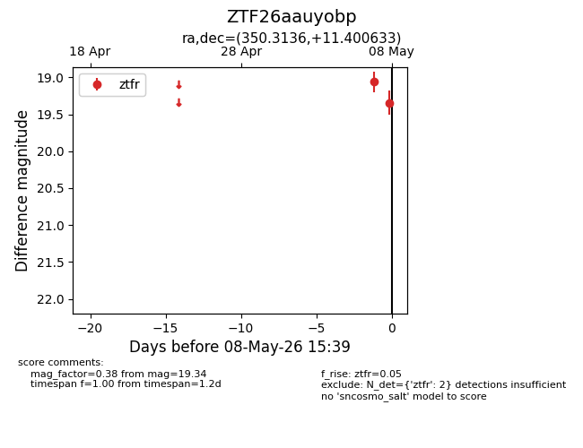
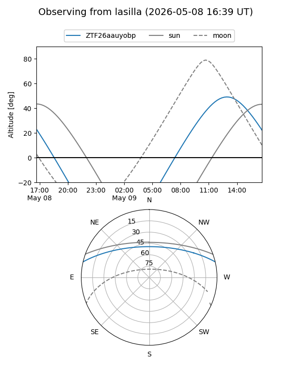
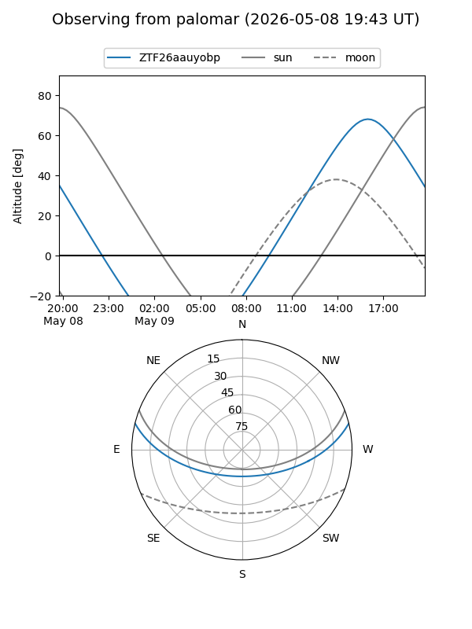

ZTF26aauyobp
Target ZTF26aauyobp at 2026-05-08 15:41
Aliases and brokers:
FINK: link
Lasair: link
ALeRCE: link
alt names
ZTF26aauyobp (ztf,fink_ztf)
Coordinates:
equatorial (ra, dec) = 350.3136,+11.40063
equatorial (HMS+DMS) = 23:21:15.26,+11:24:02.28
galactic (l, b) = (90.3777,-45.69379)
Flags:
Photometry:
last ztfr=19.34
2 ztfr detections
Lightcurve

Visibility


Additional plots